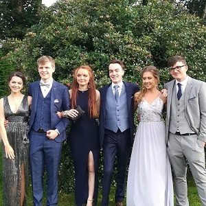
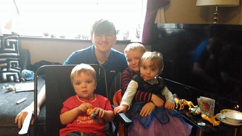
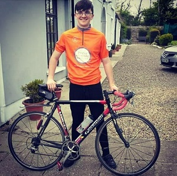
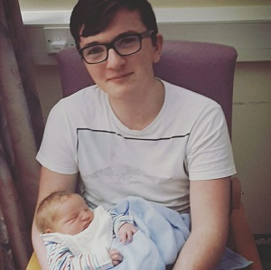
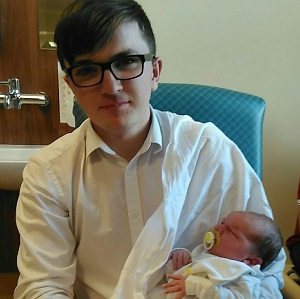
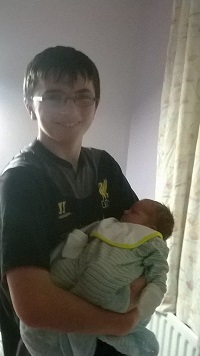
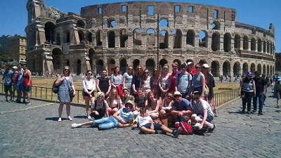

Conor and his friends getting a few pictures before heading off to their grad (From left: Molly O'Hanlon, Cillian Tobin, Emma Mooney, Cathal O'Gara, Doireann O'Sullivan, Conor HeeneyConor, joined by new and old friends, getting ready for county colours night (a night where UCC students dress up in the colours of their home county) in The Rock Bar, Cork

Conor, along with his nephews and neices at a family gathering in early 2017

Conor getting ready to cycle in Cycle Against Suicide in May of 2016 when he was in Transition Year

Conor holding his new-born nephew, Cillian Murphy in Summer 2018

Conor holding his new-born nephew, Liam Kidd in Summer 2017

Conor holding his new-born nephew, Dylan Murphy in Summer 2014

A group picture of Conor and County Wexford Youth Orchestra in Rome heading back home from the Music Inclusion festival, Summer 2016